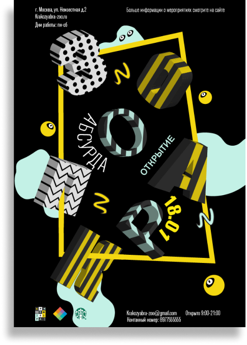
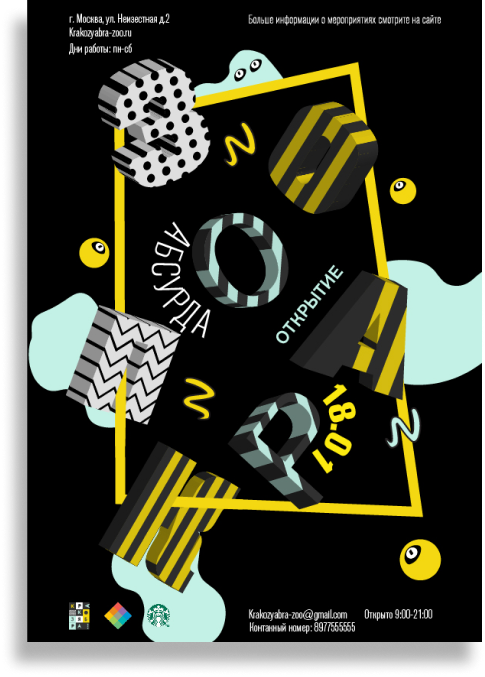

1 Этап
Брендинг

Первой задачей, с которой мы начали развитие проекта, была разработка уникального стиля для бренда и его составляющих
Подробнее2 Этап
Плакаты
Следущая задача состояла в том, чтобы разработать серии графических
и типографических плакатов
для зоопарка
 



3 Этап
Пространство
Следующей задачей было разработать концепцию пространства для зоопарка с навигацией и полной визуализацией интерьера
и экстерьера
4 Этап
Ребрендинг
Финальной частью работы стало приземление проекта до реально существующей организации в виде музея стрит-арта
Подробнее